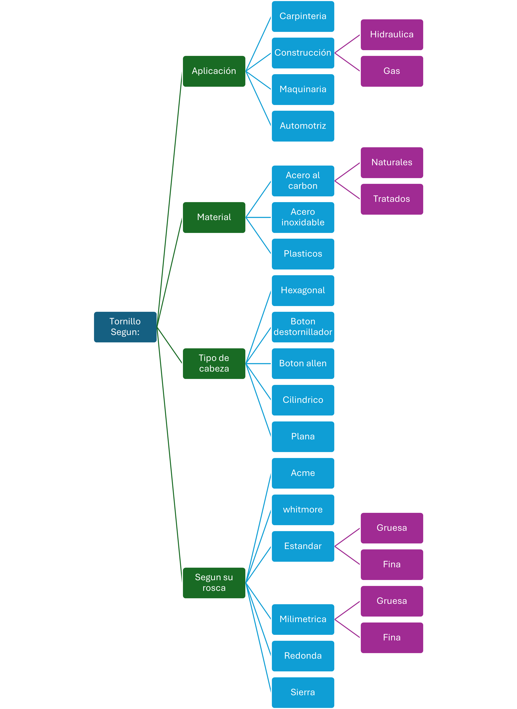
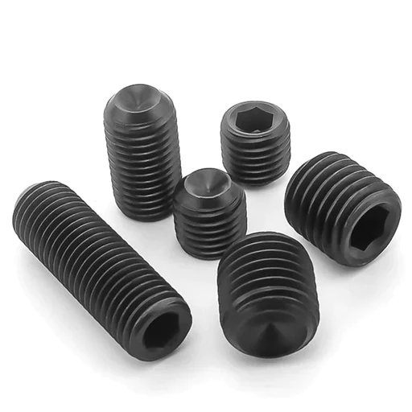
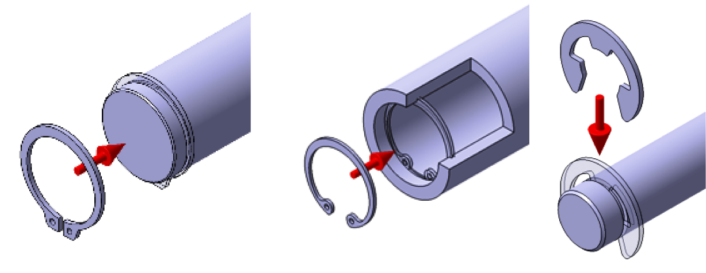
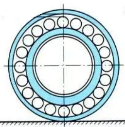

My Blog

Diseño mecánico
29-03-24
Mech Design
- Qué es una Maquina?
- Sistemas de una maquina.
- Elementos de Fijación
- Elementos de transmision mecanica.
- Friccion
- Tolerancias Geometricas y dimensionales.
- Lista de Materiales y ensamble
- Manejo de Cables
Que es una maquina?

Existen un par de libros buenisimos que pueden definir muy a detalle el concepto de maquina.
- Diseño de ingenieria mecánica por Edward shigley.
- Diseño de elementos de Maquina por Robert L. Mott
Despues esta este otro libro que puede sacarte en cualquier apuro de tablas de ingenieria.
Yo personalmente le conozco como "la biblia del ingeniero".
- Machinery's Handbook por Erik Valdemar Odberg
Despues de leer estos libros puedo concluir que NO se decir exactamente que es una maquina.
Que anticlimatico,no?, Sin embargo, Despues de Cierto tiempo Reparando Maquinas Eléctricas y Mecánicas, como ingeniero, podria resumir este concepto a El conjunto de elementos moviles y fijos que se encargan atraves de su funcion de almacenar, redirigir y/o transformar energia.
Suena muy Vago y tal vez ridiculo, pero existen muchos tipos de energia y se puede cambiar de un tipo a otro, usando principios basicos de la ciencia que nos permiten darle forma y aplicacion a las maquinas.
una vez con este concepto, tu crees que algo como un martillo es una maquina?, que tal una palanca?, o una pistola de agua de juguete?
obvio que si, todos entran dentro del concepto y por ende todos se pueden considerar maquinas de cierto tipo, por ejemplo, maquinas simples o maquinas complejas.
El diseño de una maquina simple si bien requiere un buen nivel de conocimientos de principios fisicos para poder crear un diseño que cumpla con los 3 principios de la industria un objeto debe ser por lo menos eficiente, factible e inovador puede ser diseñado y prototipado por una sola persona.
sin embargo, esto deja de ser posible cuando hablamos de maquinas complejas, ya que por su naturaleza, requieren un equipo de expertos en diferentes areas tanto de diseño como de ingenierias. por lo que estas areas a su vez se pueden dividir en sub areas. asi respectivamente mientras mas compleja sea la maquina.
Sistemas de una máquina.
Mientas mas compleja la maquina entonces, mas equipos necesitamos para realizar diferentes tareas.
Pero para el ejemplo de este articulo supongamos que se nos presenta la tarea de diseñar una nueva Impresora 3D.
Entonces partiendo de este supuesto, podemos decir que por lo menos tenemos 3 Areas, El equipo de diseño Mecanico, El equipo de diseño electronico, el Equipo de Programacion. y Cada Equipo puede a su vez ser dividido mas a detalle. por ejemplo el equipo Mecanico puede tener a una persona encargada de diseñar el chasis de la maquina, otra persona encargada de diseñar elementos que transmitan energia desde los motores hasta el cabezal, otra persona de guiar los cables desde la caja de componentes hasta el cabezal, porque estos si bien son electricos sufriran esfuerzos mecanicos constantes con los movimientos de las maquinas y asi los equipos tendran que estar comunicados entre ellos ya que hay conceptos que deberan ser definidos por mas de un equipo.
a la persona encargada de supervizar que todos los equipos avancen de manera uniforme y no se creen cuellos de botella en el proceso del desarrolo de la maquina se le conoce como "project manager" o gerente de proyectos.
- Equipo Mecánico
- Equipo de chasis
- Equipo de transmision
- Equipo de Cables
- Equipo de Cabezal
- Equipo Electrico/electrónico
- Equipo de Motores
- Equipo de Cargas
- Equipo de Diseño de placa
- Equipo de manejo de cables
- Equipo Informatico
- Equipo de UI/UX
- Equipo de Firmware
- Equipo de Software y apps.
Entonces se podria decir que algo complejo se puede dividir en distintas maquinas simples.
Elementos de Fijación
En mi opinion uno de los temas de mas infravalorados a la hora de diseñar una maquina. Me estoy refiriendo a como, cuantos y donde colocar tornillos en una maquina asi como de que tipo de tornillos.
Vamos a ver, igual yo no recomiendo que diseñes tus propios tornillos y los fabriques. Asi solo harias tu maquina inecesariamente Costosa, asi como que elevarias el costo de sus mantenimientos porque las refacciones solo las podrian conseguir contigo y nada mas.
Pero si Recomiendo encarecidamente que investigues ligeramente los tipos de Tornillos, roldanas o arandelas tuercas que existen y para que sirven.
Hazte la siguiente pregunta.
para que Sirve un Tornillo?
Si la respuesta es para unir dos piezas. Entonces, para que usamos el pegamento?
Pues cualquier tipo de pegamento o adhesivo es un elemento de fijacion, simplemente tu principio de accion es diferente uno es quimico y el otro es mecánico.
En si la funcion de un elemento de fijacion mecanica como un tornillo es unir dos superficies paralelas entre si, de forma TEMPORAL
notese enfasis en temporal, ya que este termino es muy relativo. y se colocan en lugares donde se pueda acceder a ellos para poder removerlos y realizar cambio de refacciones. aunque, a veces procuramos esconderlos a la vista del usuario por terminos esteticos, es mas conveniente que armar un chasis con pegamento porque siempre se queda un residuo remanente en las superficies y no es muy confiable el lazo quimico entre dos superficies unidas con pegamento que estaran sujetas a esfuerzos mecanicos o vibracion ya que todo objeto que se mueve produce una vibracion y esta tiene a aflojar todos los elementos de fijacion.
eso me lleva al siguiente punto en este capitulo. El cual es como evitar que las cosas se suelten una vez apretadas.
Asi como cada tornillo tiene una capacidad de carga perpendicular o paralela a su eje. todos los tornillos tienen un valor de torque de apriete o ajuste
que deberiamos respetar a la hora de considerar a la hora de elegir uno u otro diametro.
si bien existen otros elementos mecanicos que nos pueden ayudar cuando estamos considerando que el usuario aflojara los tornillos, es necesario considerar el torque de apriete correcto para asi evitar que las piezas se aflojen antes de tiempo ya que no en todos los casos podemos usar una tuerca de seguridad o una arandela de presion.
Armé este pequeño grafico para ayudar a identificar este desastre de tornilleria.
Como puedes observar escoger un tornillo puede ser tan sencillo como llevar una muestra exacta de lo que necesitas a una ferreteria o pedirlo espeficicamente como lo necesitas.
para evitar que te vuelvas loc@ buscando en internet las medidas nominales del tornillo que estas buscando usar en tu maquina en este LINK te dejo una aplicacion para android que me ha salvado la vida en mas de una ocasion, desafortunadamente se especializa en los tornillos de las normas ANSI y ASTM especificamente de maquinaria.
del mismo modo aqui te dejo el LINK el link a una pagina que puedes consultar en cualquier momento el nombre es McMaster-Carr y es una tienda en linea con base en los estados unidos que realiza una categorizacion perfecta de todos sus productos, para diseño de maquinaria, encuentras desde tornillos hasta rieles de transportadoras. incluyen costos y dimensiones, ademas en muchas ocasiones colocan los modelos 3D CAD de dicho producto.
Elementos de Transmisión mecánica
Ya vamos entrando en tema.
Un elemento de transmisión mecánica como su nombre indica es todo elemento de una maquina que atraves de movimiento redirige la energia a otro elemento o a otro punto en la maquina.
los elementos de transmision lineal como los resortes. Se pueden considerar almacenadores de energia ya que al ser accionados las propiedades de este elementos hacen que acumulen energia potencial para despues liberarla como energia cinetica.
elementos de transmision radial como engranes, poleas o catarinas de cadena, dependen forzosamente de una flecha de transmision, la cual basicamente es un cilindro concentrico al elemento el cual redirige la energia que recibe y la entrega en otro lado de la maquina.
la caja de transmision de un coche es basicamente una serie de engranes de diferentes diametros y numero de dientes que reciben en la entrada una cantidad variable de revoluciones y las multiplican dependiendo de la configuracion de engranes que se este usando en dado momento.
Calcular y diseñar engranes es mucho mas complejo de lo que yo te podria explicar en una sola entrada de blog, de hecho es todo un periodo de licenciatura el tiempo que le dedicamos a este tema. Sin embargo aqui te dejo algunas calculadoras en linea y paginas que pueden ser de utilidad cuando te encuentres diseñando una maquina.
- Simulador de engranes y cadenas
- simulador de engranes con generador de dxf.
- diseñador en linea de engranes
Cuando hablamos de la flecha de un engrane aparte de el diseño de la flecha (para eso tambien es un tema aparte) debemos hablar brevemente de como fijar la flecha al engrane.
Este es un tema muy espefico de Elementos de fijacion mecanica que no queria tocar hasta ahora, porque de otra forma tiende a confundir.
basicamente necesitamos que el engrane gire junto con la flecha y la flecha transmita toda su la energia sin sufrir falla o deformacion debido a los esfuerzo mecanicos que sufrira. esto lo lograremos con minimo 3 elementos de fijacion mecanica que no habiamos mencionado antes.
- Cuña
- Opresor
- anillo
{kind=link}
la cuña es un pedazo de barra de material ferroso endurecido para poder soportar los esfuerzos a los que se somete la flecha.
La flecha y el engrane en cuestion son preparados para recibir la cuña maquinando una geometria llamada porta-cuñas o cuñero
el cual se trata de maquinar un hueco donde idealmente se trata de la mitad del alto de una de las caras de la cuña en cada elemento. por ejemplo para recibir una cuña cuadrada de 1/4" de lado a la flecha se la maquina una ranura de 1/8" de profundidad asi como al engrane.
De este mismo modo en la imagen anterior podemos apreciar un pequeño cilindro que sale de una de las caras de la cuña perpendicular al eje de la flecha y el engrane, este barreno o agujero se prepara para recibir un opresor el cual es un pedazo de cilindo roscado muy similar a un tornillo sin embargo no tiene cabeza y la forma de ajuste por lo general es el uso de una llave hexagonal o tipo allen. en uno de los extremos.
 autor de la imagen{kind=link}
imagen representativa de algunos opresores
 autor de la imagenen la imagen superior podemos ver de izquierda a derecha un anillo de retencion exterior, un anillo de retencion interior y una chaveta tipo E, respectivamente siendo colocados.
Usualmente es un elemento que se coloca en flechas y otros elementos de transmision para evitar que estos sufran deslizamientos laterales debido a desalineamientos en el ensamble.
Fricción
al producir movimiento relativo entre dos objetos estos ocasionaran un rozamiento entre las superficies de contacto.
Este rozamiento o friccion genera calor y el calor acelera el desgaste de las propiedades mecanicas de los materiales. Por lo tanto, la friccion siempre estara ahi hagamos lo que hagamos, nuestro trabajo como diseñadores es tratar de reducirlo al minimo.
uno podria colocar uno de los materiales sumergido en una sustancia fluida como un liquido o un gas que actue como lubricante entre las 2 piezas y asi reducir la friccion, sin embargo no siempre se puede estar deteniendo la operacion de la maquina para reemplazar el lubricante que sale expulsado por la accion de fuerza centrifuga.
ahi es cuando entran en juego los elementos reductores de friccion como los baleros o chumaseras
toma un pedazo de papel y dibuja o imagina lo siguiente
dibuja en vista frontal, 2 circulos concentricos y ahora en el espacio entre el circulo mayor y el circulo menor dibuja un circulo que toque en 2 puntos los 2 concentricos y junto a el otro y junto a ese circulo procurando que toquen al circulo anterior y los 2 circulos concentricos cuando ya no puedas colocar mas circulos observalo.
deberia verse algo como lo siguiente.
 Autor de la imagen{kind=link}
Te presento al rodamiento de carga radial, comunmente llamado Balero.
este es el tipo mas basico de reductor de friccion existen casi tantos como el grafico kilometrico de los tornillos.
basicamente son dos anillos de metal uno de ellos gira con la flecha y el otro se queda estatico y la friccion es reducida gracias al uso de los balines o esferas de metal que crean un contacto minimo entre ambos anillos y encima de esto el espacio entre todos los balines esta relleno de un lubricante de alta capacidad como la grasa automotriz.
el balero en su anillo estatico y anillo dinamico deben estar metidos o embutidos en el chasis o la flecha a presion lo mas justo que permita el material del ensamble.
para eliminar por completo la friccion entre ambos componentes.
lo que me lleva a hablar del siguiente tema.
Tolerancias Geometricas y dimensionales.
Cada proceso de fabricación tiene unos margenes de error en cuanto a las dimensiones y condiciones geometricas de una pieza (paralelismo, perpendicularidad, concentricidad, etc.)
a estos margenes les llamamos Tolerancias
y es un tema muuuy extenso, solo es necesario que sepas que dentro de este tema existen algo que se llaman tolerancias de ajuste o interferencia.
basicamente existen 4 condiciones de ajuste
- Ajuste prensado
- Se necesita la ayuda de alguna maquina mecanica para poder lograr realizar este ajuste
- Ajuste de apriete
- Por lo general se calcula para que pueda ser ensamblado con la mano.
- Ajuste Movil
- En este ajuste una vez ensamblado ambas partes siguen teniendo ligero movimiento relativo. (requiere el uso de elemntos de fijacion mecanica)
- Ajuste de juego
- En este metodo lo que se busca es crear ligera holgura sin perder la concentricidad entre las 2 piezas. (requiere el uso de elementos de fijacion forzosa).
Usando solo la teoria podemos ejemplificar de la siguiente manera.
- Prensado
- lo usaremos cuando dos piezas no deban tener movimiento relativo y no querramos usar elementos de fijacion mecanica o quimica.
- Apriete
- cuando necesitamos remover elementos del ensamble a mano.
- Movil
- cuando necesitamos movimiento relativo con bajo nivel de friccion y no sea necesario el uso de baleros o chumaseras.
- juego u Holgura
- usualmente lo estaremos usando para barrenos que alberguen tornillos o elementos mecanicos que no requieran tanta exactitud.
Listas de Materiales y ensambles
Usualmente cuando nosotros estamos diseñando, tenemos una idea muy clara como ensamblar, Sabemos exactamente cuantos tornillos necesitamos de que tipo y donde van ensamblados.
Sin embargo el diseñador mecanico no puede solo pensar en uno mismo ya que siempre es parte de un equipo multidisiplinario.
Por lo tanto nace la necesidad de crear listas de materiales y ensambles.
Aqui es cuando luce mucho la experiencia de cada Diseñador.
por Ejemplo yo, para mi es muy facil hacer estas listas ya que el software que uso para crear mis diseños profesionales es muy util para esto ya que solo debo añadir una hoja a mis planos y creo una tabla con la cantidad de tornillos y puedo colocar hasta hipervinculos para que se puedan visitar las paginas donde comprar dicho item.
y para la lista de ensamble muchas veces es mas practico dividirlo por secciones.
en este ejemplo en especifico como puedes ver use una hoja para la lista del material, la segunda hoja la use para detallar el ensamble aqui puedes usar las hojas que necesites, solo necesitaba una hoja mas para dejar en claro que las dimensiones que importan estan en el que llame "cajon hueco"
Manejo de Cables
Este tema, Tal vez esta un poco de mas ya que si bien el diseñador mecanico no estara pasando y conectando los cables. Un buen diseño integra cada aspecto del producto, aunque sea en forma muy basico, ya es cuestion de la persona especialista la desicion final. si la propuesta inicial de diseño es viable o el mejor lugar para pasar los cables.
los cables que conducen energia electrica de cualquier tipo son un manojo de alambres de cobre enrollados dentro de un material aislante. Estos son muy utiles para conducir energia electrica, sin embargo son muy fragiles, y se pueden romper con facilidad o incluso en caso muy especificos una mala desicion de manejo de cables puede freir circuitos integrados sensibles al ruido electronico.
los tips que voy a enlistar aqui son muy breves ya que nunca he encontrado documentacion tecnica profesional sobre "el arte de peinar cables", como le conocemos.
- Sobre categorizar los cables
- Los cables de alto voltaje deben ir separados fisicamente de los cables de comunicacion(sobre todo si los cables no son los adecuados) no tengo una referencia para darte ya que en mi experiencia los valores varian mucho dependiendo de la aplicacion, sin embargo como referencia si estas trabajando con datos de un PLC y Fases de un motor de 220VCA deberias por lo menos poner 10 cm de distancia entre ambos conductores. Estoy seguro que para aplicaciones donde trabajamos con 110VCA,12VDC y comunicacion sera mucho menor la distancia.
- Sobre esconder los cables
- Para evitar que los cables se vean podemos recurrir a canaletas,
- Sobre por Donde pasar los cables
© Your Site Name. All Rights Reserved. Designed by HTML Codex